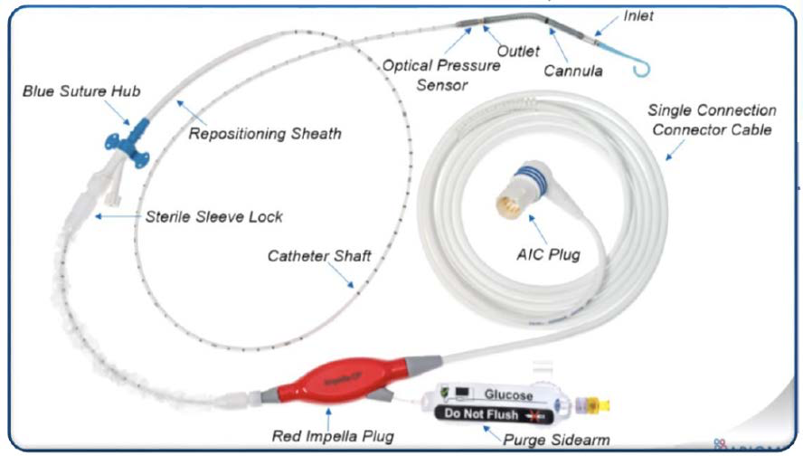

Disposable Components
The Impella CP system consists of several single-use disposable components that are essential for device operation and patient safety.
📦 Purge Cassette
Function: Integrated infusion pump and pressure transmitter that delivers rinsing fluid through the catheter to prevent blood from entering the Impella motor.
Key Features:
- Automated purge system control
- Pressure monitoring and adjustment
- Sterile fluid delivery pathway
- Single-use, pre-packaged system
🔧 Introducer Kit
Components included:
- 14F peel-away introducer and dilator
- Sequential dilators: 8Fr, 10Fr, and 12Fr
- 0.035" guidewire for initial vascular access
Purpose: Enables progressive dilation of the femoral arteriotomy to accommodate the 14F Impella catheter.
💉 Impella Catheter and Accessories
Package contents:
- Impella CP with SmartAssist catheter - Main device
- White connector cable - Links catheter to AIC console
- 0.018" placement guidewire - For catheter positioning
- Repositioning sheath with Tuohy Borst valve - Allows catheter adjustment

Figure 2: Impella CP with SmartAssist Catheter - showing catheter components including inlet area, optical placement sensor, micro-axial motor, and outlet cannula
Storage and Handling
- All disposable components are sterile and single-use only
- Store in original packaging until ready for use
- Check expiration dates before use
- Do not use if packaging is damaged or opened
- Maintain sterile technique throughout setup
Ordering and Availability
Disposable kits are stored in:
- Cardiac catheter laboratories (BHI)
- Cardiac theatres
- General ICU (A600) - emergency stock
- Cardiac ICU (C604) - emergency stock
For emergency access or stock queries, contact the cardiac physiologist on call via switchboard.